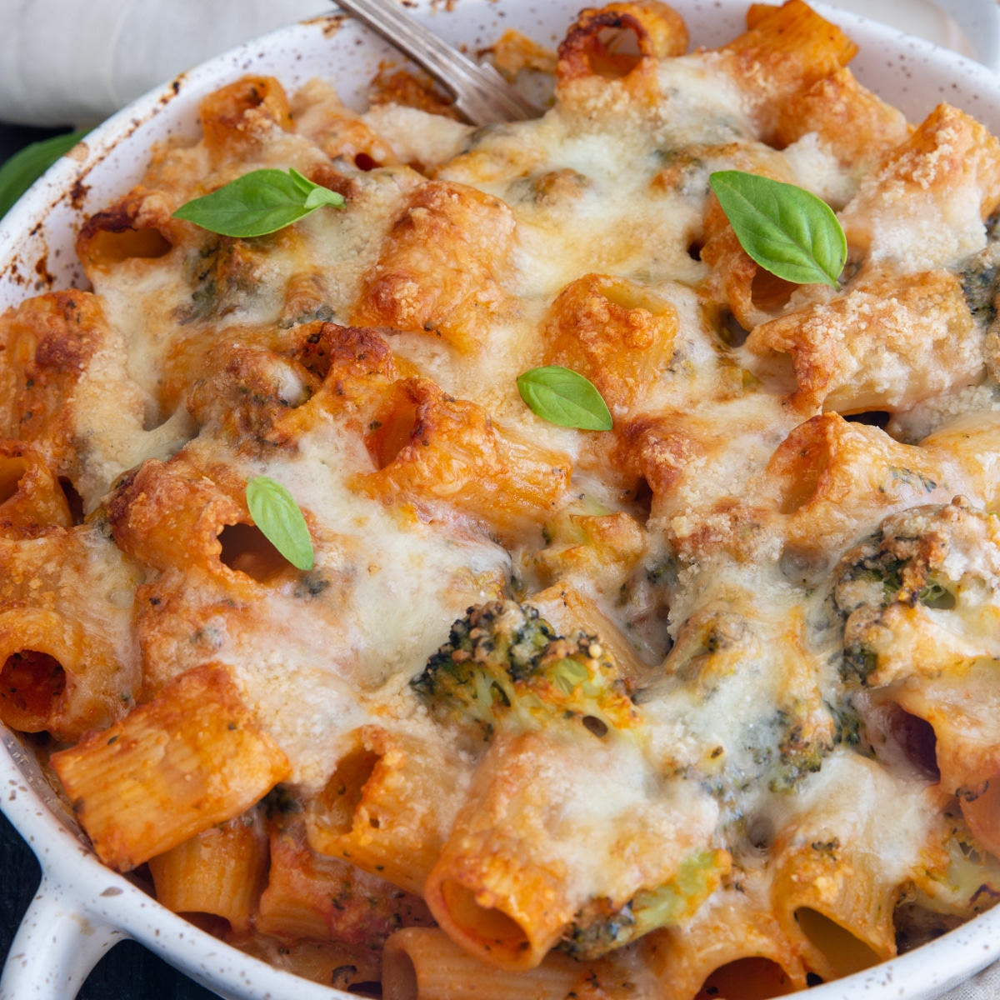

Broccoli Cheese Pasta Bake

Today, it’s all about our broccoli cheese pasta bake. This pasta bake is a casserole that combines two flavors most people enjoy, broccoli and cheese. It’s very similar to John’s cheesy pasta bake casserole that we shared back in 2019.
This recipe starts with a short pasta noodle and fresh broccoli florets tossed in a creamy cheese sauce topped with freshly shredded cheese. It doesn’t get much better than that!
Ingredients
- 8 ounces uncooked penne pasta (or other short pasta noodle)
- 4 cups fresh broccoli florets
- 2 tablespoons unsalted butter
- 2 tablespoons all-purpose flour
- 2 tablespoons garlic, minced or pressed
- 1 teaspoon salt
- ½ teaspoon dried basil
- ½ teaspoon dried oregano
- 1 cup heavy cream
- 1 cup chicken broth
- 1 cup shredded gruyere cheese, divided
- 1 cup shredded parmesan cheese, divided
Steps
- Preheat the oven to 350°F, and lightly grease a 2.5 quart baking dish. Set aside.
- Bring a large pot of salted water to a boil, and cook the pasta for 5-6 minutes. Add the broccoli florets and cook for an additional 1 minute. The pasta should be al dente, and the broccoli should be lightly blanched.
- Drain the pasta and broccoli, rinse under cold water, drain again, and set aside. In a large skillet over medium heat, melt the butter. Whisk in the flour, and cook for 2-3 minutes. Then, add the garlic, salt, basil, and oregano, and whisk to combine.
- Adjust the heat to low. While continuing to whisk, slowly pour in the heavy cream and broth. Continue whisking until wisps of steam begin to rise from the liquid. Then, add half the Gruyere and half the Parmesan cheese a little at a time, whisking between each addition until the cheese is melted. Remove from heat.
- Transfer the pasta, broccoli, and sauce to the prepared baking dish. Stir to combine. Top with the remaining cheese. Bake uncovered for 20-25 minutes or until the cheese is golden brown and the sauce is bubbling around the edges.
- Remove from the oven and allow to cool for 10 minutes before serving. See post for storage options.